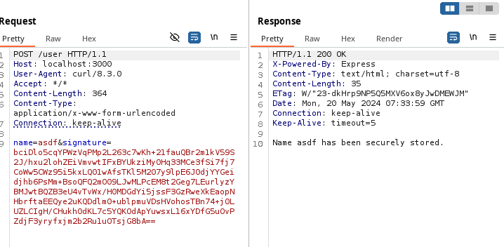

TL;DR
This research will guide you through how to handle complex flows using the Reshaper plugin when performing web application security testing with Burp Suite. Even though Burp Suite arguably is the best proxy in the business - it falls short in certain tasks where the Reshaper plugin (developed by ddwightx) will shine.
This research may be used as a reference or baseline when building your Reshaper rules or a training ground to improve your Burp skills.
In total 6 scenarios will be displayed where all of them have an accompanied demo application:
- Scenario 1 - Resending CSRF tokens which changes on each request with Burp
- Scenario 2 - Using Burp to increment values with Reshapers Evaluate action
- Scenario 3 - Using Burp with custom scripting via Reshapers JavaScript engine
- Scenario 4 - URL and base64 encoding
- Scenario 5 - Using Burp with command line tools with Reshapers Run Process
- Scenario 6 - Using Burp and Reshaper to perform multiple request and save PDF files to disk
- Scenario 7 - gRPC from the abyss
While some of these scenarios can be solved with other solutions such as Mitmproxy, Hackvertor or Burp macros, this plugin gives more versatility.
And a big shout out to @ddwightx for making all of these stunts available via Reshaper. Big thanks!
Background
How many times have you had issues with handling CSRF tokens in a web assessment? What if you were told that this have been possible all along with the lesser known plugin called Reshaper?
It is powerful, extremely powerful. The popularity of this plugin is oddly enough low, maybe because of its complexity and limited guides and detailed setup steps.
We will show you how to utilize this plugin in some common scenarios where the standard Burp Suite lacks the capability.
Reshaper introduction
When installed Reshaper provides a new tab in burp with multiple sub tabs:
Most time will be spent in the HTTP rules sub tab as it is here you configure what actions the plugin should perform.
Let’s start with a simple task such as setting a comment named testing on HTTP requests.
Use the add button to create a new rule. In the Whens frame give it a name and choose the event
direction of the rule. As we want to trigger on outgoing traffic we choose
request as direction.
The next step is the provide what the action,Thens, will be when matching the Whens:
Choose comment and add. Specify a name, check enabled an finish off with save.
We are now done. All request passing through Burp will have the comment “testing”. Nice.
Now we want to change the Whens to only perform actions when the request is
sent to a specific path i.e /user. Any of the following matches text will be sufficient:
| Source Message Value | Source Value Type | Match Text |
|---|---|---|
| Request URI Path | Text | /user |
| Request URI | Text | /user |
| Request Status Line | Text | GET /user HTTP/1.1 |
| URL | Text | http://localhost:3000/user |
The following setup will successfully comment a request with a status line of
GET /user HTTP/1.1
More advanced rules can be performed such as matching if a JSON key value pair exists in the request body (be mindful that the Source Value Path and Match Text should not include quotation):
The following picture is an example request that will be matched by our rule:
Cool. Now we have a basic knowledge how to configure Reshaper. Lets dive in to some interesting scenarios.
Scenario 1 - Resending CSRF tokens which changes on each request with Burp
Alright, we know the basics of how to configure Reshaper. Let’s put it to the test on a demo application.
The demo application is an API application hosted with node.js. Save this
code as app.js and run it with node app.js:
// mkdir $HOME/node-api-csrf
// cd $HOME/node-api-csrf
// npn init -y
// npm install express uuid
const express = require('express');
const { v4: uuidv4 } = require('uuid');
const app = express();
app.use(express.json()); // Middleware to parse JSON bodies
// In-memory "database"
const users = [];
// CSRF tokens store
const csrfTokens = new Map();
// Middleware to check CSRF token
function checkCsrfToken(req, res, next) {
const csrfToken = req.headers['csrf-token'];
if (!csrfToken || !csrfTokens.has(csrfToken)) {
const newToken = uuidv4();
csrfTokens.set(newToken, true);
res.setHeader('CSRF-Token', newToken); // Provide a valid CSRF token in response header
return res.status(403).json({ error: "Invalid CSRF token" });
}
// CSRF token is valid, let's remove it and proceed
csrfTokens.delete(csrfToken);
next();
}
// Route to add a user
app.post('/user', checkCsrfToken, (req, res) => {
const { name } = req.body;
if (!name) {
return res.status(400).json({ error: 'Name is required' });
}
users.push(name); // Storing the name in "database"
const newToken = uuidv4();
csrfTokens.set(newToken, true);
res.setHeader('CSRF-Token', newToken); // Provide a valid CSRF token in response header
res.status(201).send('User added');
});
// Starting the server
const PORT = process.env.PORT || 3000;
app.listen(PORT, () => {
console.log(`Server running on http://localhost:${PORT}`);
});
The end-user can send a JSON formatted POST body to /user endpoint which adds
a name to the in-memory database. The request will only be successful if the
end-user provides
CSRF token which is randomly generated and returned to the user as a HTTP response
header.
If we would want to use Burp’s built in active scanner to look for vulnerabilities this would be a problem as we need to provide the CSRF token upon each request.

To circumvent this problem we create a new Reshaper rule called “set_csrf_variable” and configure the Whens with Request Direction = Response and actions as the example shown in the following table:
| Request Direction | Whens | Source Message Value | Source Identifier | Identifier Placement | Source Value Type | Match Type | Match Text |
|---|---|---|---|---|---|---|---|
| Response | Matches Text | Response Header | CSRF-Token | Last | Text | Regex | .+ |
The Regexp .+ matches any sequence of characters that is at least one
character long which makes sure the Response Header CSRF-Token is not
empty.
For the Thens part we want to store our CSRF-Token in a variable:
| Request Direction | Thens | Source Message Value | Source Identifier | Identifier Placement | Source Value Type | Destination Variable Source | Destination Variable Name | Destination Variable Name |
|---|---|---|---|---|---|---|---|---|
| N/A | Set Variable | Response Header | CSRF-Token | Last | Text | Global | csrf_variable | Text |
This rule will, for every response that has CSRF-Token set as a header,
fetch the token value and save it to a variable named csrf_variable.
The result should look like this:
Now, when sending a request to the server via Burp, a variable will be created or updated in the Global Variables sub tab of Reshaper:
Next step is to use this csrf_variable in subsequent request. We
do by creating a new rule called set_csrf with event direction request and by using the
Set Value as a Whens action according to the following tables:
| Request Direction | Whens | Source Message Value | Source Value Type | Match Type | Match Text | |
|---|---|---|---|---|---|---|
| Request | Matches Text | URL | Text | Equals | http://localhost:3000/user |
| Request Direction | Thens | Source Text | Source Type Value | Destination Message Value | Destination Identifier | Destination Identifier Placement | Destination Type Value |
|---|---|---|---|---|---|---|---|
| N/A | Set Value | {{g:csrf_variable}} | Text | Request Header | CSRF-Token | Only | Text |
The result should look like this:
If all steps are followed correctly every response that contains a CSRF-Token
will will be saved as a variable which will be referenced and used in all upcoming request
to http://localhost:3000/user. This makes it possible to, for instance, use
Burp active scanner where CSRF tokens need to be provided.
Quite powerful innit.
But now you went all this way only find out that your CSRF token is provided via cookies and not HTTP headers? Not a problem. Replace the references to Request Header and Response Header to Request Cookie and Response Cookie.
Scenario 2 - Using Burp to increment values with Reshapers Evaluate action
In the previous scenario we configured Reshaper to fetch a value from a response and the use that value in subsequent requests which works perfectly when assessing applications with CSRF tokens.
Now we will demonstrate another hurdle that Reshaper can help bypass, namely incrementing values.
For this demonstration we will yet again use an API hosted by node.js that takes user input in JSON format and stores in memory.
// mkdir $HOME/node-api-version
// cd $HOME/node-api-version
// npn init -y
// npm install express
const express = require('express');
const app = express();
const PORT = process.env.PORT || 3000;
app.use(express.json());
// In-memory storage
let userData = {
name: null,
version: 0
};
app.post('/user', (req, res) => {
const { name, version } = req.body;
if (name && version !== undefined) {
if (version > userData.version) {
userData.name = name;
userData.version = version;
return res.status(200).json({ message: "User data updated", data: userData });
} else {
return res.status(400).json({ error: "A newer version exists. Please update the version number." });
}
} else {
return res.status(400).json({ error: "Both name and version are required" });
}
});
app.listen(PORT, () => {
console.log(`Server running on http://localhost:${PORT}`);
});
The end-user can send a JSON formatted POST body to /user endpoint which updates the name
key on the server with the provided value. The request is only successful if the end-user provides
a valid version number, which is increased every time the name is updated.
POST /user HTTP/1.1
Host: localhost
Content-Type: application/json
Content-Length: 31
{
"name":"user1",
"version":1
}
This obstacle would be a problem for Burp’s active scanner or let alone be a time consuming task overcoming manually when using Burp’s repeater.
We circumvent this by creating a new Reshaper rule called
set_version_variable and configure the Whens
to either of the following examples in the table which shows how to match
text or JSON key values:
| Request Direction | Whens | Source Message Value | Source Value Type | Source Value Path | Match Type | Match Text |
|---|---|---|---|---|---|---|
| Response | Matching Text | Response Body | Text | N/A | Contains | “version”: |
| Response | Matching Text | Response Body | JSON | data.version | Regex | [0-9] |
- The usage of quotation with version in the first example is because we are now looking for a string in the response body which is quoted..
- The reason for using data.version in the second example is because the response from the server is nested JSON, as in:
HTTP/1.1 200 OK
X-Powered-By: Express
Content-Type: application/json; charset=utf-8
{
"message":"User data updated",
"data":{
"name":"user",
"version":14
}
}
For the Thens we configure it as follows:
| Request Direction | Thens | Source Message Value | Source Value Type | Source Value Path | Destination Variable Source | Destination Variable Name | Destination Value Type |
|---|---|---|---|---|---|---|---|
| N/A | Set Variable | Response Body | JSON | data.version | Global | version_variable | Text |
This should make sure that we have the current version number stored in a variable in Burp.
However, this
must be increased by 1 because every time the name parameter is updated we need
to provide a new version number.
We accomplish this by using the Evaluate action in Reshaper:
| Request Direction | Whens | X | Operation | Y | Destination Variable Source | Destination Variable Name |
|---|---|---|---|---|---|---|
| N/A | Evaluate | {{g:version_variable}} | Add | 1 | Global | version_variable_incremented |
The result should look like this:
And the Evaluate action:
Now, when sending a request to the server with a correct version number, two variables should be created in the Global Variables sub tab of Reshaper:
Next step is to replace the version key-value in subsequent requests with
the version_variable_incremented. We can perform this by creating a new
rule with event direction request and by using the
Set Value action according to the following image:
If all steps are followed correctly every request that contains a JSON key-value
pair with the name version, with data as a digit and is sent to http://localhost:3000/user
will have it’s version key-value replaced with our variable version_variable_increased. Great success.
Scenario 3 - Using Burp with custom scripting via Reshapers JavaScript engine
This incrementation done by the Evalute action done in the previous scenario can also be perform with JavaScript. This scenarion will display the richness and customizability by using Reshapers JavaScript engine.
So instead of using the Evaluate setup in the previous example we replace it with Run Script. “Script” refers to JavaScript whereas Run Process can run execute python, ruby or bash scripts stored on the file system.
The following setup will use Run Script instead of Evaluate in the
set_version_variable rules:
Whens:
| Request Direction | Whens | Source Message Value | Source Value Type | Source Value Path | Destination Variable Source | Destination Variable Name | Destination Value Type |
|---|---|---|---|---|---|---|---|
| Request | Match text | Response Body | JSON | data.version | Global | version_variable | Text |
Thens:
| Request Direction | Thens | Source Message Value | Source Value Type | Source Value Path | Destination Variable Source | Destination Variable Name | Destination Value Type |
|---|---|---|---|---|---|---|---|
| N/A | Set Variable | Response Body | JSON | data.version | Global | version_variable | Text |
Instead of the Evaluate action we add Run Script with the following JavaScript code:
var version = Reshaper.variables.getGlobalVariable("version_variable");
let verint = parseInt(version, 10);
verint += 1;
Reshaper.event.runThen("SetVariable",
{
text: verint,
useMessageValue: false,
targetSource: "Global",
variableName: "version_variable_incremented"
}
);
When configured it should look like this:
The JavaScript fetches the version_variable data and converts it to an int
which is incremented and stored in a variable named version_variable_incremented.
By knowing how to fetch and store variables with Reshapers JavaScript Engine opens up for unlimited flexibility.
Scenario 4 - URL and base64 encoding
New scenario new possibilities. Hackvertor is an awesome extension when is comes to converting and encoding data. All of these action can also be done with Reshaper which will be demonstrated in this scenario.
The following node.js application code is vulnerable to SQL injection, the caveat however is that the input is required to be base64 encoded. Compared to previous scenarios this demonstration application use form-urlencoding instead of JSON input to mix things up a bit.
// mkdir $HOME/node-api-sqli
// cd $HOME/node-api-sqli
// npm init -y
// npm install express sqlite3 body-parser
const express = require('express');
const bodyParser = require('body-parser');
const sqlite3 = require('sqlite3').verbose();
const app = express();
const port = 3000;
app.use(bodyParser.urlencoded({ extended: false }));
// Initialize the in-memory SQLite database
const db = new sqlite3.Database(':memory:', (err) => {
if (err) {
return console.error(err.message);
}
console.log('Connected to the in-memory SQLite database.');
});
// Create a users table and insert some sample data
db.serialize(() => {
db.run('CREATE TABLE users (id INTEGER PRIMARY KEY AUTOINCREMENT, name TEXT NOT NULL)');
db.run("INSERT INTO users (name) VALUES ('Alice'), ('Bob'), ('Charlie')");
});
// Middleware to decode base64 and URL encoding
app.use((req, res, next) => {
if (req.method === 'POST') {
if (typeof req.body.data === 'string') {
try {
let decodedData = decodeURIComponent(Buffer.from(req.body.data, 'base64').toString('ascii'));
req.decodedInput = decodedData;
next();
} catch (e) {
res.status(400).send('Invalid input. Please ensure your input is base64 and URL encoded.');
}
} else {
res.status(400).send('Invalid input format.');
}
} else {
next();
}
});
// Vulnerable SQL route
app.post('/search', (req, res) => {
let query = `SELECT * FROM users WHERE name = '${req.decodedInput}'`;
db.all(query, [], (err, rows) => {
if (err) {
return res.status(500).send('Error executing SQL query.');
}
res.json(rows);
});
});
app.listen(port, () => {
console.log(`Server running on http://localhost:${port}`);
});
By supplying Alice' or '1'=1 base64 encoded in the data parameter the full
database is dumped:
This SQL injection is very trivial to exploit and much more complex payloads may be needed in live environments. When testing and construction these payloads it may be time consuming to base64 decode or encode at every attempt.
For this we will use Reshaper to:
- Fetch payload from the
dataparameter in our request body and store it in a variable namedpayload_plain_text - Use the JavaScript engine to base64 encode our
payload_plain_textdata and store that as a new variable namedpayload_base64 - Replace the
datarequest body parameter with the payload stored in thepayload_base64variable
| Request Direction | Whens | Source Message Value | Source Value Type | Source Value Path | Match Type | Match Text |
|---|---|---|---|---|---|---|
| Response | Matching Text | Request Body | Params | data | Regexp | .+ |
| Request Direction | Thens | Source Message Value | Source Value Type | Source Value Path | Destination Variable Source | Destination Variable Name | Destination Value Type |
|---|---|---|---|---|---|---|---|
| N/A | Set Variable | Request Body | Params | data | Global | payload_plain_text | Text |
Next we will add run a custom JavaScript that fetches the payload_plain_text, base64
encodes it and saves it to payload_base64
Run Script:
var Base64 = {
// private property
_keyStr : "ABCDEFGHIJKLMNOPQRSTUVWXYZabcdefghijklmnopqrstuvwxyz0123456789+/=",
// public method for encoding
encode : function (input) {
var output = "";
var chr1, chr2, chr3, enc1, enc2, enc3, enc4;
var i = 0;
input = Base64._utf8_encode(input);
while (i < input.length) {
chr1 = input.charCodeAt(i++);
chr2 = input.charCodeAt(i++);
chr3 = input.charCodeAt(i++);
enc1 = chr1 >> 2;
enc2 = ((chr1 & 3) << 4) | (chr2 >> 4);
enc3 = ((chr2 & 15) << 2) | (chr3 >> 6);
enc4 = chr3 & 63;
if (isNaN(chr2)) {
enc3 = enc4 = 64;
} else if (isNaN(chr3)) {
enc4 = 64;
}
output = output +
this._keyStr.charAt(enc1) + this._keyStr.charAt(enc2) +
this._keyStr.charAt(enc3) + this._keyStr.charAt(enc4);
}
return output;
},
// public method for decoding
decode : function (input) {
var output = "";
var chr1, chr2, chr3;
var enc1, enc2, enc3, enc4;
var i = 0;
input = input.replace(/[^A-Za-z0-9\+\/\=]/g, "");
while (i < input.length) {
enc1 = this._keyStr.indexOf(input.charAt(i++));
enc2 = this._keyStr.indexOf(input.charAt(i++));
enc3 = this._keyStr.indexOf(input.charAt(i++));
enc4 = this._keyStr.indexOf(input.charAt(i++));
chr1 = (enc1 << 2) | (enc2 >> 4);
chr2 = ((enc2 & 15) << 4) | (enc3 >> 2);
chr3 = ((enc3 & 3) << 6) | enc4;
output = output + String.fromCharCode(chr1);
if (enc3 != 64) {
output = output + String.fromCharCode(chr2);
}
if (enc4 != 64) {
output = output + String.fromCharCode(chr3);
}
}
output = Base64._utf8_decode(output);
return output;
},
// private method for UTF-8 encoding
_utf8_encode : function (string) {
string = string.replace(/\r\n/g,"\n");
var utftext = "";
for (var n = 0; n < string.length; n++) {
var c = string.charCodeAt(n);
if (c < 128) {
utftext += String.fromCharCode(c);
}
else if((c > 127) && (c < 2048)) {
utftext += String.fromCharCode((c >> 6) | 192);
utftext += String.fromCharCode((c & 63) | 128);
}
else {
utftext += String.fromCharCode((c >> 12) | 224);
utftext += String.fromCharCode(((c >> 6) & 63) | 128);
utftext += String.fromCharCode((c & 63) | 128);
}
}
return utftext;
},
// private method for UTF-8 decoding
_utf8_decode : function (utftext) {
var string = "";
var i = 0;
var c = c1 = c2 = 0;
while ( i < utftext.length ) {
c = utftext.charCodeAt(i);
if (c < 128) {
string += String.fromCharCode(c);
i++;
}
else if((c > 191) && (c < 224)) {
c2 = utftext.charCodeAt(i+1);
string += String.fromCharCode(((c & 31) << 6) | (c2 & 63));
i += 2;
}
else {
c2 = utftext.charCodeAt(i+1);
c3 = utftext.charCodeAt(i+2);
string += String.fromCharCode(((c & 15) << 12) | ((c2 & 63) << 6) | (c3 & 63));
i += 3;
}
}
return string;
}
}
var snus = Base64.encode(Reshaper.variables.getGlobalVariable("payload_plain_text"));
Reshaper.event.runThen("SetVariable",
{
text: snus,
useMessageValue: false,
targetSource: "Global",
variableName: "payload_base64"
}
);
And to finish up, we’ll use the Set Value action to replace the payload in the data
parameter that will be sent to the server:
| Request Direction | Thens | Source Text | Source Type Value | Destination Message Value | Destination Value Type | Destination Identifier Placement | Destination Value Path |
|---|---|---|---|---|---|---|---|
| N/A | Set Value | {{g:payload_base64}} | Text | Request Body | Params | N/A | data |
The three steps should be inserted in the following order:
Now we can write our payloads in plain text and let Reshaper convert our input:
Awesome, we can now on the fly base64 encode data in form-url parameters. This is certainly useful.
Scenario 5 - Using Burp with command line tools with Reshaper Run Process
Alright, so in the previous example we implemented a base64 encoder in JavaScript to handle encoding of input to perform a SQL injection attack.
In this scenario we will continue build upon our base64 encoder but this time we will use it with the Run Process action in Reshaper. This will help us send complex data structures from Burp into a custom command-line tool, which will be used in upcoming HTTP requests.
For this demonstration we will use a web application that only accepts input
if the input data is provided with a valid signature. The signature
is verified with the node-rsa package.
We will continue using form-urlencoding as our input to further familiarize ourself with the concept.
Setup the environment and store as app.js:
// mkdir $HOME/node-api-sign
// cd $HOME/node-api-sign
// npn init -y
// npm install express body-parser node-rsa
// openssl rsa -pubout -in private_key.pem -out public_key.pem
const express = require('express');
const bodyParser = require('body-parser');
const fs = require('fs');
const NodeRSA = require('node-rsa');
const app = express();
const port = 3000;
// Use bodyParser to parse application/x-www-form-urlencoded bodies
app.use(bodyParser.urlencoded({ extended: true }));
// Load the public key from file
const publicKey = fs.readFileSync('public_key.pem', 'utf8');
const key = new NodeRSA();
key.importKey(publicKey, 'public');
app.post('/user', (req, res) => {
let { name, signature } = req.body;
if (!name || !signature) {
return res.status(400).send('Missing name or signature.');
}
// Correcting URL-decoded Base64 signature: replace spaces with plus signs
signature = signature.replace(/\s/g, '+');
// Verify the signature
const isVerified = key.verify(
name,
Buffer.from(signature, 'base64'),
'utf8',
'base64'
);
if (!isVerified) {
return res.status(401).send('Invalid signature.');
}
res.send(`Name ${name} has been securely stored.`);
});
app.listen(port, () => {
console.log(`Server running on http://localhost:${port}`);
});
We will use the following python3 script (signer.py) to perform the signing of the input data that will be sent to the server. The script also includes a try statement that checks if the input to the script is base64 encoded or not. More on this later.
from cryptography.hazmat.primitives import hashes
from cryptography.hazmat.primitives.asymmetric import padding
from cryptography.hazmat.primitives.serialization import load_pem_private_key
import base64
import sys
import os
# pip3 install cryptography
data = (sys.argv[1]).encode()
try:
# Attempt to decode the base64-encoded string
data = base64.b64decode(data).decode('utf-8')
data = data.encode()
#print("Input is base64")
except Exception as e:
# If decoding fails, return the original string
#print("Input not base64")
pass
# Load your private key
dir_path = os.path.dirname(os.path.realpath(__file__))
key_path = os.path.join(dir_path, 'private_key.pem')
with open(key_path, "rb") as key_file:
private_key = load_pem_private_key(key_file.read(), password=None)
# Sign the data
signature = private_key.sign(
data,
padding.PKCS1v15(),
hashes.SHA256()
)
# Encode the signature in base64 to simplify handling
signature_base64 = base64.b64encode(signature).decode()
print(signature_base64)
$ python3 signer.py asdf
bciDlo5cqYPWzVqPMp2L263c7wKh+21fauQBr2m1kV59S2J/hxu2lohZEiVmvwtIFxBYUkziMy0Hq33MCe3fSi7fj7CoWw5CWz95i5kxLQ01wAfsTKl5M207y9lpE6J0djYYGeidjhb6PsMm+BsoQFQ2mO09LJwMLPcEM8t2Geg7LEurlyzYBMJwtBQZB3eU4vTvWx/H0MDGdYi5jssF3GzRweXkEaopNHbrftaEEQye2uKQDdlm0+ublpmuVDsHVohosTBn74+j0LUZLCIgH/CHukh0dKL7c5YQKOdApYuwsxL16xYDfG5uOvPZdjF3yryfxjm2b2Ru1uOTsjG8bA==
$ curl -X POST -d 'name=asdf&signature=bciDlo5cqYPWzVqPMp2L263c7wKh+21fauQBr2m1kV59S2J/hxu2lohZEiVmvwtIFxBYUkziMy0Hq33MCe3fSi7fj7CoWw5CWz95i5kxLQ01wAfsTKl5M207y9lpE6J0djYYGeidjhb6PsMm+BsoQFQ2mO09LJwMLPcEM8t2Geg7LEurlyzYBMJwtBQZB3eU4vTvWx/H0MDGdYi5jssF3GzRweXkEaopNHbrftaEEQye2uKQDdlm0+ublpmuVDsHVohosTBn74+j0LUZLCIgH/CHukh0dKL7c5YQKOdApYuwsxL16xYDfG5uOvPZdjF3yryfxjm2b2Ru1uOTsjG8bA==' http://localhost:3000/user
Awesome, our demo application works:

Lets say we want to use Burps intruder to fuzz to name parameter. We begin
by creating a Reshaper rule for when it should trigger:
| Request Direction | Whens | Source Message Value | Source Value Type | Source Value Path | Match Type | Match Text |
|---|---|---|---|---|---|---|
| Request | Matching Text | Request Body | Params | name | Regexp | .+ |
We’ll store our input parameter name as a variable named name_input:
| Request Direction | Thens | Source Message Value | Source Value Type | Source Value Path | Destination Variable Source | Destination Variable Name | Destination Value Type |
|---|---|---|---|---|---|---|---|
| N/A | Set Variable | Request Body | Params | data | Global | name_input | Text |
Next we take our name_input variable and base64 encode it much like we did
in scenario 4. We store the base64 value in a variable named name_input_base64:
Run Script:
var Base64 = {
// private property
_keyStr : "ABCDEFGHIJKLMNOPQRSTUVWXYZabcdefghijklmnopqrstuvwxyz0123456789+/=",
// public method for encoding
encode : function (input) {
var output = "";
var chr1, chr2, chr3, enc1, enc2, enc3, enc4;
var i = 0;
input = Base64._utf8_encode(input);
while (i < input.length) {
chr1 = input.charCodeAt(i++);
chr2 = input.charCodeAt(i++);
chr3 = input.charCodeAt(i++);
enc1 = chr1 >> 2;
enc2 = ((chr1 & 3) << 4) | (chr2 >> 4);
enc3 = ((chr2 & 15) << 2) | (chr3 >> 6);
enc4 = chr3 & 63;
if (isNaN(chr2)) {
enc3 = enc4 = 64;
} else if (isNaN(chr3)) {
enc4 = 64;
}
output = output +
this._keyStr.charAt(enc1) + this._keyStr.charAt(enc2) +
this._keyStr.charAt(enc3) + this._keyStr.charAt(enc4);
}
return output;
},
// public method for decoding
decode : function (input) {
var output = "";
var chr1, chr2, chr3;
var enc1, enc2, enc3, enc4;
var i = 0;
input = input.replace(/[^A-Za-z0-9\+\/\=]/g, "");
while (i < input.length) {
enc1 = this._keyStr.indexOf(input.charAt(i++));
enc2 = this._keyStr.indexOf(input.charAt(i++));
enc3 = this._keyStr.indexOf(input.charAt(i++));
enc4 = this._keyStr.indexOf(input.charAt(i++));
chr1 = (enc1 << 2) | (enc2 >> 4);
chr2 = ((enc2 & 15) << 4) | (enc3 >> 2);
chr3 = ((enc3 & 3) << 6) | enc4;
output = output + String.fromCharCode(chr1);
if (enc3 != 64) {
output = output + String.fromCharCode(chr2);
}
if (enc4 != 64) {
output = output + String.fromCharCode(chr3);
}
}
output = Base64._utf8_decode(output);
return output;
},
// private method for UTF-8 encoding
_utf8_encode : function (string) {
string = string.replace(/\r\n/g,"\n");
var utftext = "";
for (var n = 0; n < string.length; n++) {
var c = string.charCodeAt(n);
if (c < 128) {
utftext += String.fromCharCode(c);
}
else if((c > 127) && (c < 2048)) {
utftext += String.fromCharCode((c >> 6) | 192);
utftext += String.fromCharCode((c & 63) | 128);
}
else {
utftext += String.fromCharCode((c >> 12) | 224);
utftext += String.fromCharCode(((c >> 6) & 63) | 128);
utftext += String.fromCharCode((c & 63) | 128);
}
}
return utftext;
},
// private method for UTF-8 decoding
_utf8_decode : function (utftext) {
var string = "";
var i = 0;
var c = c1 = c2 = 0;
while ( i < utftext.length ) {
c = utftext.charCodeAt(i);
if (c < 128) {
string += String.fromCharCode(c);
i++;
}
else if((c > 191) && (c < 224)) {
c2 = utftext.charCodeAt(i+1);
string += String.fromCharCode(((c & 31) << 6) | (c2 & 63));
i += 2;
}
else {
c2 = utftext.charCodeAt(i+1);
c3 = utftext.charCodeAt(i+2);
string += String.fromCharCode(((c & 15) << 12) | ((c2 & 63) << 6) | (c3 & 63));
i += 3;
}
}
return string;
}
}
var snus = Base64.encode(Reshaper.variables.getGlobalVariable("name_input"));
Reshaper.event.runThen("SetVariable",
{
text: snus,
useMessageValue: false,
targetSource: "Global",
variableName: "name_input_base64"
}
);
The reason for base64 encoding our data before sending it to a console is because many Burp payloads may include single our double quotes which can escape our terminal command and we end up command injecting ourselves instead of the server.
Next we use Run Process to drop our name_input_base64 variable to our python3
tool called signer.py.
| Request Direction | Thens | Command | Stdin | Wait for completion | Capture Output | Capture Variable Name |
|---|---|---|---|---|---|---|
| N/A | Run Process | python3 /home/user/tricky-apis/node-api-sign/signer.py {{g:name_input_base64}} | Checked | Checked | signature |
If everything is followed correctly 3 variables will be created in the Global Variables tab:
Next up we will use the Set value action the replace our form-urlencode parameters:
| Request Direction | Thens | Source Text | Source Type Value | Destination Message Value | Destination Value Type | Destination Identifier Placement | Destination Value Path |
|---|---|---|---|---|---|---|---|
| N/A | Set Value | {{g:name_input}} | Text | Request Body | Params | N/A | name |
| N/A | Set Value | {{g:signature}} | Text | Request Body | Params | N/A | signature |
Very nice. However, when we test run our setup everything works correctly with repeater but never with intruder. Don’t forget to activate Intruder at Capture Traffic From under settings:
Also remember to set the maximum concurrent requests in the Intruder resource pool to 1. The setup we have created is quite CPU intensive and will not handle concurrency.
But on the other hand - it’s automagic :)
Scenario 6 - Using Burp and Reshaper to perform multiple request and save PDF to disk
Who doesn’t love a good PDF generator? We at Shelltrail certainly do. However sometimes multiple steps is needed to provide the content that later will be used in the generated PDF.
To simulate this we run the following node.js application:
// mkdir $HOME/node-api-pdf
// cd $HOME/node-api-pdf
// npm init -y
// npm install express body-parser puppeteer
const express = require('express');
const bodyParser = require('body-parser');
const puppeteer = require('puppeteer');
const app = express();
const port = 3000;
// In-memory storage for HTML
let storedHTML = '';
// Middleware to check API key
const apiKeyMiddleware = (req, res, next) => {
const apiKey = req.headers['api-key'];
if (apiKey !== '1d8e71ab-8e46-47aa-b25c-a3c8c83b0360') {
return res.status(403).json({ message: 'Forbidden: Incorrect API key' });
}
next();
};
app.use(bodyParser.text({ type: 'text/html' }));
// Insert endpoint
app.post('/insert', apiKeyMiddleware, (req, res) => {
storedHTML = req.body; // Store HTML content in memory
res.status(200).json({ message: 'HTML content stored successfully' });
});
// Generate endpoint
app.get('/generate', apiKeyMiddleware, async (req, res) => {
if (!storedHTML) {
return res.status(404).json({ message: 'No HTML content found to generate PDF' });
}
const browser = await puppeteer.launch();
const page = await browser.newPage();
await page.setContent(storedHTML, { waitUntil: 'networkidle0' });
const pdfBuffer = await page.pdf({ format: 'A4' });
await browser.close();
res.contentType('application/pdf');
res.send(pdfBuffer);
});
app.listen(port, () => {
console.log(`Server running on http://localhost:${port}`);
});
The application has two endpoints, /insert and /generate. The /insert
takes user supplied input via a POST body and stores in memory and returns a UUID
representing the content. The input should be in HTML.
Upon performing a GET request to /generate/<UUID> the HTML content will be
converted to a PDF.
Both endpoint requires an API key.
Storing the HTML content:
$ curl -X POST http://localhost:3000/insert \
-H 'Content-Type: text/html' \
-H 'API-Key: 1d8e71ab-8e46-47aa-b25c-a3c8c83b0360' \
-d '<html><body><h1>Hello, World!</h1></body></html>'
{"uuid":"5d164279-4515-4db6-b620-976c2b56431d"}
Generating the PDF:
$ curl http://localhost:3000/generate/5d164279-4515-4db6-b620-976c2b56431d -H 'API-Key: 1d8e71ab-8e46-47aa-b25c-a3c8c83b0360' -o output.pdf
% Total % Received % Xferd Average Speed Time Time Time Current
Dload Upload Total Spent Left Speed
100 14408 100 14408 0 0 9232 0 0:00:01 0:00:01 --:--:-- 9229
$ file output.pdf
output.pdf: PDF document, version 1.4, 1 page(s)
Great success. Everything seems to work as expected.
Lets plan our setup:
- Set the API key named
api_keyas variable in Reshaper - Create a Whens action to trigger on POST to
/input - Store the UUID in a variable named
uuidreturned from the/inputaction. - Build a HTTP GET request which uses the UUID variable and API key to generate the PDF
- Send the crafted HTTP request
- Save the generate PDF to disk
Task 1 - Set the API key named api_key as variable in Reshaper:
Task 2 - Create a Whens action to trigger on POST to /input:
| Request Direction | Whens | Source Message Value | Source Value Type | Match Type | Match Text | |
|---|---|---|---|---|---|---|
| Response | Matches Text | Request Status Line | Text | Equals | POST /insert HTTP/1.1 |
(Note: The Request direction shall be Response even though our POST action is a Request.)
Task 3 - Store the returned UUID in a variable named uuid from the /input
endpoint:
| Request Direction | Thens | Source Message Value | Source Value Type | Source Value Path | Destination Variable Source | Destination Variable Name | Destination Value Type |
|---|---|---|---|---|---|---|---|
| N/A | Set Variable | Response Body | JSON | uuid | Global | uuid | Text |
Task 4 - Build a HTTP GET request which uses the UUID variable and API key to generate the PDF:
Now we need to use a new action type called Build HTTP Message.
| Request Direction | Thens | Event Direction | Starter HTTP message | Setter (1) - Source Text | Destination Message Value | Destination Identifier Placement | Setter (2) | Source Text | Destination Message Value | Destination Identifier | Destination Identifier Placement | Destination Variable Source | Destination Variable Name |
|---|---|---|---|---|---|---|---|---|---|---|---|---|---|
| N/A | Build HTTP Message | Request | GET /generate/{{g:uuid}} HTTP/1.1 | {{g:api_key}} | Request Header | API-Key | Only | localhost:3000 | Request Header | Host | Only | Global | http_message |
Now this is really cool. If we trigger this Reshaper rule by sending a POST request to /insert to get an UUID response, Reshaper crafts a fully functional HTTP request and store in a variable called http_message:
Task 5 - Send the crafted HTTP request:
| Request Direction | Thens | Request | URL | Protocol | Address | Port | Wait for Completion |
|---|---|---|---|---|---|---|---|
| N/A | Send Request | {{g:http_message}} | Checked |
Task 6 - Save the generate PDF to disk:
We store every PDF on disk because we want to manually inspect them to not miss any potential vulnerabilities.
To achieve this We create a new Reshaper HTTP rule that will match on the
HTTP response header Content-Type: application/pdf:
| Request Direction | Whens | Source Message Value | Source Identifier | Identifies Placement | Source Value Type | Match Type | Match Text |
|---|---|---|---|---|---|---|---|
| Response | Matches Text | Response Header | Content-Type | Last | Text | Equals | application-pdf |
We set the response body (a.k.a the PDF file) to a variable named pdf
| Request Direction | Thens | Source Message Value | Source Value Type | Destination Variable Source | Destination Variable Name | Destination Value Type |
|---|---|---|---|---|---|---|
| N/A | Set Variable | Response Body | Text | Global | Text |
And then save that variable to disk at the location /tmp/pdf/<UUID>.pdf:
| Request Direction | Thens | File Path | Text | Encoding | File Exist Action |
|---|---|---|---|---|---|
| N/A | Save File | /tmp/pdf/{{g:uuid}}.pdf | {{g:pdf}} | Default | Overwrite |
From now on every request that is sent to /insert will save a PDF to the
/tmp/pdf location where inspection of content can be made.
$ file /tmp/pdf/*
/tmp/pdf/05b053d5-e232-449f-b2d2-0c4338d8a2f6.pdf: PDF document, version 1.4, 1 page(s)
/tmp/pdf/3e674c45-369e-4b04-8409-f90539a50eb3.pdf: PDF document, version 1.4, 1 page(s)
/tmp/pdf/7fb8bbc0-91fd-4141-ba2a-090419364e5d.pdf: PDF document, version 1.4, 1 page(s)
/tmp/pdf/812b488a-ecc1-4e8d-b8ef-b2dd105c181a.pdf: PDF document, version 1.4, 1 page(s)
/tmp/pdf/88ce6b32-26ca-46f8-ad43-e77a8f679098.pdf: PDF document, version 1.4, 1 page(s)
/tmp/pdf/c5c94988-d980-49d4-ba48-1d20ed5e877c.pdf: PDF document, version 1.4, 1 page(s)
/tmp/pdf/ec410dc7-6937-45bb-ba58-37ab85566297.pdf: PDF document, version 1.4, 1 page(s)
/tmp/pdf/f9c0101f-c510-49d6-be47-da2fb382206b.pdf: PDF document, version 1.4, 1 page(s)
Scenario 7 - gRPC from the abyss
gRPC is a tricky protocol which makes automatic scanning and testing hard as it is using protobuf and serializes its messages. @nxenon has performed in-depth research and provides tooling for encoding and decoding these protobuf messages.
We’ll build on top of that research and implement an automatic encoder that can be used with Burps active scanner and repeater.
Use nxenon’s echo gRPC lab to spin up an demo environment which will be used to demonstrate Reshapers abilities.
When the environment is live requests and responses will look like this:
Lets configure our Reshaper HTTP rules as following:
| Request Direction | Whens | Source Message Value | Source Value Type | Match Type | Match Text | ||
|---|---|---|---|---|---|---|---|
| Response | Matches Text | URL | Text | Equals | http://localhost:8080/grpc.gateway.testing.EchoService/Echo |
We’ll set the request body to a variable:
| Request Direction | Thens | Source Message Value | Source Value Type | Destination Variable Source | Destination Variable Name | Destination Value Type | |
|---|---|---|---|---|---|---|---|
| N/A | Set Variable | Request Body | Text | Global | grpc | Text |
We once again use our base64 encoder technique to encode our data before dropping it to our command-line tooling.
Run Script:
var Base64 = {
// private property
_keyStr : "ABCDEFGHIJKLMNOPQRSTUVWXYZabcdefghijklmnopqrstuvwxyz0123456789+/=",
// public method for encoding
encode : function (input) {
var output = "";
var chr1, chr2, chr3, enc1, enc2, enc3, enc4;
var i = 0;
input = Base64._utf8_encode(input);
while (i < input.length) {
chr1 = input.charCodeAt(i++);
chr2 = input.charCodeAt(i++);
chr3 = input.charCodeAt(i++);
enc1 = chr1 >> 2;
enc2 = ((chr1 & 3) << 4) | (chr2 >> 4);
enc3 = ((chr2 & 15) << 2) | (chr3 >> 6);
enc4 = chr3 & 63;
if (isNaN(chr2)) {
enc3 = enc4 = 64;
} else if (isNaN(chr3)) {
enc4 = 64;
}
output = output +
this._keyStr.charAt(enc1) + this._keyStr.charAt(enc2) +
this._keyStr.charAt(enc3) + this._keyStr.charAt(enc4);
}
return output;
},
// public method for decoding
decode : function (input) {
var output = "";
var chr1, chr2, chr3;
var enc1, enc2, enc3, enc4;
var i = 0;
input = input.replace(/[^A-Za-z0-9\+\/\=]/g, "");
while (i < input.length) {
enc1 = this._keyStr.indexOf(input.charAt(i++));
enc2 = this._keyStr.indexOf(input.charAt(i++));
enc3 = this._keyStr.indexOf(input.charAt(i++));
enc4 = this._keyStr.indexOf(input.charAt(i++));
chr1 = (enc1 << 2) | (enc2 >> 4);
chr2 = ((enc2 & 15) << 4) | (enc3 >> 2);
chr3 = ((enc3 & 3) << 6) | enc4;
output = output + String.fromCharCode(chr1);
if (enc3 != 64) {
output = output + String.fromCharCode(chr2);
}
if (enc4 != 64) {
output = output + String.fromCharCode(chr3);
}
}
output = Base64._utf8_decode(output);
return output;
},
// private method for UTF-8 encoding
_utf8_encode : function (string) {
string = string.replace(/\r\n/g,"\n");
var utftext = "";
for (var n = 0; n < string.length; n++) {
var c = string.charCodeAt(n);
if (c < 128) {
utftext += String.fromCharCode(c);
}
else if((c > 127) && (c < 2048)) {
utftext += String.fromCharCode((c >> 6) | 192);
utftext += String.fromCharCode((c & 63) | 128);
}
else {
utftext += String.fromCharCode((c >> 12) | 224);
utftext += String.fromCharCode(((c >> 6) & 63) | 128);
utftext += String.fromCharCode((c & 63) | 128);
}
}
return utftext;
},
// private method for UTF-8 decoding
_utf8_decode : function (utftext) {
var string = "";
var i = 0;
var c = c1 = c2 = 0;
while ( i < utftext.length ) {
c = utftext.charCodeAt(i);
if (c < 128) {
string += String.fromCharCode(c);
i++;
}
else if((c > 191) && (c < 224)) {
c2 = utftext.charCodeAt(i+1);
string += String.fromCharCode(((c & 31) << 6) | (c2 & 63));
i += 2;
}
else {
c2 = utftext.charCodeAt(i+1);
c3 = utftext.charCodeAt(i+2);
string += String.fromCharCode(((c & 15) << 12) | ((c2 & 63) << 6) | (c3 & 63));
i += 3;
}
}
return string;
}
}
var snus = Base64.encode(Reshaper.variables.getGlobalVariable("grpc"));
Reshaper.event.runThen("SetVariable",
{
text: snus,
useMessageValue: false,
targetSource: "Global",
variableName: "grpc_base64"
}
);
Now we send our payload stored in the grpc_base64 variable to nxenon’s
grpc-coder.py tool:
| Request Direction | Thens | Command | Stdin | Wait for completion | Capture Output | Capture Variable Name |
|---|---|---|---|---|---|---|
| N/A | Run Process | echo $(echo {{g:grpc_base64}} | base64 -d) | protoscope -s | python3 /home/user/grpc-coder.py –encode | tr -d ‘\n’ | Checked | Checked | grpc_payload |
Next we replace our request body with the gRPC encoded payload:
| Request Direction | Thens | Source Text | Source Type Value | Destination Message Value | Destination Value Type |
|---|---|---|---|---|---|
| N/A | Set Value | {{g:grpc_payload}} | Text | Request Body | Text |
Awesome. Now we can grab a valid request that has been sent to the server,
use the grpc-coder.py to decode the input, then we can use Burps active scanner
or manually customize the input as we please and all encoding will be
done automatically.
This will save us precious time when assessing gRPC Web applications.
Summary
Reshaper is an extremely powerful Burp plugin that helps you automate complex flows or overcome hurdles when assessing advanced web applications. It’s been a long way to reach the end of this research but if you are here you most certainly learned a thing or two regarding the many possibilities with Burp and Reshaper which may help you when pentesting web applications.
All the code from all node.js applications can be found at Shelltrails github page,
Take care and happy hacking!